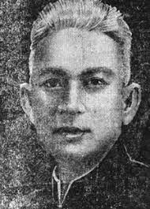

Nay về Bất Bạt quê nhà
Sông to, cá lớn lại là thứ ngon…
(Tản Đà)

.Thuở đó, cách đây ngoài hai chục năm, chúng tôi còn ở cái tuổi học sinh 15, 17, mà thi sĩ Tản Đà thì đã gần đi hết đoạn đường chót của cuộc sống (1). Khi đó, Tản Đà đã mới bước phiêu lưu và trở về tiêu dao ngày tháng ở quê nhà Bất Bạt (Khê Thượng. Sơn Tây), để hàng ngày ngắm cái cảnh:
Nước rợn sông Đà, con cá nhẩy,
Mây chùm non Tản, cái diều bay…
Một ngày đẹp trời kia, bọn chúng tôi ba người rủ nhau đạp ba chiếc xe đạp lọc cọc từ Hà Nội lên Khê Thượng, tìm đến Bất Bạt để yết kiến nhà thơ của sông Đà, núi Tản. Chúng tôi đến thăm Tản Đà tiên sinh với hai danh nghĩa: trước hết, vì chúng tôi là những kẻ hậu sinh có lòng ngưỡng mộ bậc đàn anh thi sĩ từ lâu, tuy hồi đó tiên sinh chỉ còn thỉnh thoảng đăng những bài dịch Đường Thi trên tờ tuần báo Phong Hóa. Sau nữa, đến thăm thi sĩ Tản Đà, chúng tôi lấy danh nghĩa là những “ký giả học trò” tìm phỏng vấn nhà thi hào đất nước đế viết bài tưởng thuật cho tờ báo “Chàng Học sinh Bưởi” do chúng tôi chủ trương. Một tờ báo viết tay “xuất bản” hàng tháng trong trường và phát hành đúng… một số duy nhất, truyền từ tay người này qua tay người khác. (Cố nhiên phát hành thầm lén, vì một tờ báo làm ở học đường thời Pháp thuộc, dù chẳng đả động gì tới chính trị, thời thế, cũng vẫn bị coi là một món quốc cấm!)
Vậy thì, nhân danh là những chủ nhiệm với chủ bút của thứ báo học sinh “bất hợp pháp” đó, để mà phỏng vấn một nhà thơ nổi tiếng khó chiều như Tản Đà, thiết tưởng chẳng những đã không gây nổi chút uy tín nào, mà còn có vẻ khôi hài không đứng đắn là khác; nếu không phải là ngây thơ tới độ ngớ ngẩn. Ấy thế mà Tản Đà tiên sinh đã không coi là truyện khôi hài. Tiên sinh vẫn niềm nở tiếp đãi chúng tôi, vừa nhã đạm trang trọng, vừa thân mật tự nhiên, như đối với những người bạn tri kỷ thực sự, mà vẫn dành riêng một chút giao tình đãi ngộ đặc biệt đối với khách phương xa.
Điều đáng quý ở bậc đàn anh thi sĩ đó, chính là ở chỗ tiên sinh rất khinh bạc, khó tính đối với thiên hạ - cái thiên hạ thế nhân “mắt trắng” gồm những kẻ trưởng giả hào phú, những kẻ “tai to mặt lớn” ít nhất cũng có tư thế hoặc danh vị thiết thực và trị giá cao hơn cái dauh nghĩa “Văn sĩ ký giả học sinh” của chúng tôi (chính tiên sinh đã từng đóng cửa không tiếp một ông lớn, đeo đủ cả bài ngà cùng mề đay, có đủ cả lính tráng bưng tráp điếu theo hầu, đến nhờ tiên sinh để xin một bài thơ mừng thọ…) nhưng tiên sinh đã rất vui lòng tiếp chúng tôi, không phân biệt tuổi tác, cũng chẳng kể chúng tôi chỉ là những anh chàng học sinh chưa ra đời, chưa bầy vui với cả lớp môn đệ ít tuổi nhất của tiên sinh. Đáng quý, chính là tấm lòng thi sĩ cởi mở và bao dung, bát ngát như mây non Tản, như nước sông Đà, với mối tình thanh khí vô cùng phóng khoáng và càng rất mực hào sảng của tiên sinh.
Bởi vậy, tiên sinh ân cần cho chúng tôi ngồi hầu chuyện thơ, và uống trà tàu do chính tay tiên sinh pha.
Tiên sinh gọi chúng tôi là “các cậu” với một giọng khoan hòa rất đáng yêu; Tuy mái tóc đã điểm trắng nhiều, nhưng nét mặt, nhất là phong độ của tiên sinh vẫn rất trẻ (năm đó Tản Đà xấp xỉ 50 tuổi).
Uống vừa tàn ba tuần trà thì niềm hào hứng của tác giả những “Giấc Mộng Lớn, Giấc Mộng Con” đã bốc lên tới cái độ hoàn toàn không còn phân biệt tóc bạc với đầu xanh. Tiếng cười sảng khoái của tiên sinh thẳng thắn vang lên trong ngôi nhà gỗ ba gian, làm bay vù những con chim sẻ tọc mạch đậu ngay đầu thềm, phía ngoài bức mành mành rung động bóng cây xanh.
Lúc đó, tiên sinh dường như chính thức coi chúng tôi là bọn đồng lứa. Tiên sinh vỗ vai chúng tôi, không gọi chúng tôi là “cậu” nữa, và rất trịnh trọng, rất chân thành, tiên sinh cũng gọi chúng tôi là “tiên sinh”… để rồi tiên sinh nhất định giữ chúng tôi ở lại uống rượu, dùng cơm với tiên sinh.
Bọn thiếu niên chúng tôi thực không dám chờ đợi những cử chỉ thù tiếp quá thân mật ở bậc đàn anh thi bá, nhưng được dùng cơm chung một mâm với thi sĩ tửu đã nổi tiếng cầu kỳ về khoa ẩm thực, mà lại hầu rượu nhà thơ ở ngay căn nhà thơ mộng trông ra Sông Đà, Non Tản, xét ra cũng là một dịp thú vị hãn hữu. Vả lại thi sĩ Tản Đà không để chúng tôi kịp “làm gái” lấy lệ; tiên sinh lập tức gọi người nhà sửa soạn cơm rượu cho bốn người ăn, tiên sinh đích thân bầy biện mâm rượu, và cố nhiên tiên sinh định đoạt lấy thực đơn.
Trước hết, tiên sinh khệ nệ bưng từ dưới gầm giường lên một vò rượu lớn, tiên sinh chuyên rượu đó sang một cái nậm quả bầu, và rót rượu ra bốn chiếc chén cổ, tiên sinh mỉm cười và nói với chúng tôi:
- Các cậu còn trẻ tuổi, chắc chưa quen uống rượu. Nhưng thỉếu niên cũng phải tập dần đi thì vừa. Cái lệ của tao nhân mặc khách, đã ăn tất phải uống, mà uống tất nhiên là phải uống rượu. Mời nhau ăn cơm, cao lương mỹ vị đầy đủ, không có rượu, thì thực là… “cầm thú chi tình”!
Chúng tôi nhớ mãi câu nói đó của nhà thơ sông Đà, núi Tản, và quả tình, trong bữa ăn hạnh ngộ với thi sĩ Tản Đà ở Khê Thượng hôm ấy, chúng tôi đã phải uống rượu rất nhiều, và ăn rất ít như một tửu đồ chân chính vì chúng tôi cứ nơm nớp lo sợ Tản Đà chê là… “cầm thú”!
Tuy nhiên phải nhận rằng: ăn uống với một người có phong độ như Tản Đà, thực là một điều khoái hoạt hiếm có. Tiên sinh đã nâng việc ẩm thực lên tới một nghệ thuật tinh vi, tuy có hơi phiền toái, nhưng nếu có hoàn cảnh hưởng nhàn, thì chính cái phiên toái ấy lại là yếu tố tạo thi vị cho miếng ăn, khiến con người có một chút nào quên đi cái định luật “Ăn để mà sống”, và nghĩ rằng “Ăn để mà tô điểm cho cuộc sống thêm phong vị”. Âu cũng là một quan điểm triết lý nhân sinh của nhà nghệ sĩ chủ trương sự nhịp nhàng hòa điệu cả tâm lẫn vật.
Mâm rượu của thi sĩ Tản Đà là cả một bản hợp tấu điều hòa đủ mùi, sắc, hương vị, hình thái, cả âm thanh nữa, tiết điệu đơn giản mà linh động, hấp dẫn: trên chiếc mâm vi cổ kính - thứ mâm gỗ hình chữ nhật vành son, sơn then - nhà thơ bày la liệt những đĩa, những chén nho nhỏ xinh xinh, đựng linh tinh các món gia vị: chút tương vòng óng, chút nước mắm ô long nâu thâm, những trái ớt đỏ tươi, những quả chanh cốm xanh ngắt, và đĩa rau riếp thái nhỏ điểm lên những cánh rau thơm, rau mùi, rau ngổ hái ngay ở vườn nhà, và đĩa rau muống chẻ non bẽo - thứ rau muống Sơn Tây trắng nõn như ngó cần - không thiếu từ chút hạt tiêu sọ, thêm cả một con cả cuống băm, mấy củ hành hoa, đĩa lạc rang, vài chiếc bánh đa vừng… Đặc biệt, những gia vị đó đều chia ra làm nhiều đĩa, nhiều chén, đủ bốn phần dàn ra bốn góc mâm như kiểu ăn chả cá.
Liền bên cạnh mâm, ngay đầu giường, thi sĩ đặt cả hai chiếc hỏa lò, than hồng quạt sẵn.
Rượu đã cạn tới chén thứ ba, Tản Đà mới tuyên bố:
- Hôm nay, ta thưởng thức một bữa ăn toàn hương vị đơn sơ của sông Đà, nghĩa là chỉ có tôm cá tươi, và linh hồn sẽ là món cá dấm… Thực đơn quê mà thôi, nhưng ngon miệng là đủ rồi.
Thi sĩ rung đùi ngâm luôn:
Nay về Bất Bạt quê nhà,
Sông to, cá lớn lại là thứ ngon…
Và thi sĩ chỉ hai chiếc hoả lò với hai cái chảo mà mỡ sôi đã bắt đầu xèo xẻo một âm hưởng vui tai và ấm lòng. Thi sĩ giải thích:
- Hai chảo mỡ này, một để rán cá một để rán tôm nhắm rượu trước. Món nhắm đặc biệt, phải tự tay mình làm mới thú.
Người nhà đem những khúc cá chép đã đánh vẩy, mổ moi, làm lòng sẵn, máu tươi còn đỏ hồng thớ thịt. Tản Đà tiên sinh chỉ việc hoàn thành khúc điệu rán vàng khúc cá. Mùi hành tỏi thơm điếc mũi… Khúc cá xắt từng khoanh mỏng được bàn tay rất có nghệ thuật của nhà thơ chuyển âm giai, tiết tấu nhanh thoăn thoắt, và bốn khúc chín vàng đều, cùng một lượt được gắp ra bốn chiếc đĩa men xanh. Đó là phần khúc thứ nhất của bản hợp tấu.
Phân khúc thứ hai là món tôm rán - thứ tôm lớn của sông Đà vừa mới kéo vó lên khỏi mặt nước, liền được đưa tới đây để nhảy vào chảo mỡ của,hà thi sĩ. Xin nói ngay: đây cũng là món đặc biệt của Tản Đà. Thường, người ta vẫn ăn tôm rang, tôm sốt cà chua hoặc tôm tẩm bột rán… Nhưng phải ăn tôm tươi rán thuần tuý và đơn giản như Tản Đà, và phải có chảo mỡ bên cạnh, để cũng như Tản Đà, nhìn thấy từng con tôm cong mình trong mỡ sôi, và được con nào, gắp luôn ngay ra đĩa, lót mấy là ngổ tươi phía dưới, hoặc điểm mấy cuống ngổ vào ngay chảo mỡ thay cho hành tỏi … (chính Tản Đà thi sĩ đã nghiên cứu và nghiệm thấy rằng: chỉ có rau ngổ mới hợp vị, mới thực quấn quít đậm đà với tôm rán. Riêng tôi cũng chịu nhận xét đó là đúng). Tóm lại, phải ăn tôm tươi rán như Tản Đà ăn, mới thấm được tất cả cái chân vị thuần khiết của tôm Sông Đà.
Tới món cá dấm là món tiêu biểu nhất của “Bất Bạt quê nhà”… Tản Đà vội giảng cho chúng tôi nghe cả một bài học về ăn cá dấm:
- Cá dấm thường vẫn là món để ăn cơm. Nhưng, với các tữu đồ biết tự trọng và “hiểu được bụng cá” (nguyên văn của Tản Đà) thì cá dấm chính là món để uống rượu tuyệt ngon. Và ngon nhất là cổ lòng cá. Vì đã nấu dấm thì dù là cá trắm, cá chép hay cá mè, cá quả, cũng đều phải nấu cá lớn. Mà cá lớn thì giá trị nhất chỉ có bộ lòng. Ăn cá dấm mà bỏ qua mất bộ lòng, kẻ ấy đáng gọi là bỉ phu, nếu không phải là xuẩn ngốc!
Chúng tôi chỉ biết ngồi nghe thành khẩn. Hơi rượu đã bốc lên say ngây ngất, chúng tôi như chợt tỉnh hẳn người, khi ngửi thấy mùi thơm ngào ngạt của thìa là, của khế chua, quyện với hơi mẻ nồng nàn tỏa lên từ nồi canh cả dấm nóng hổi, nước sóng sánh mỡ vàng.
Thi sĩ Tản Đà thận trọng vớt riêng bộ lòng cá ra để vào một chiếc đĩa lớn, lại vớt riêng chiếc đầu cá để vào một chiếc đĩa nhỏ, đoạn nâng chén rượu, cạn một hơi, chỉ tay mời chúng tôi vào tiệc và căn dặn mãi:
- Các cậu nhắm đi! Lòng cá ăn trước, đầu cá ăn sau. Chừng nào lòng cá hơi nguội, ta múc một thìa canh dấm nóng chan vào mà húp.
Nồi canh cá dấm đặt trên hỏa lò vẫn sôi sùng sục. Chúng tôi ăn, chúng tôi uống, chúng tôi đặt đũa xuống, nâng bát lên, nhất nhất đều theo cử động Tản Đà tiên sinh. Tuy nhiên, dù không ai bảo ai, chúng tôi cũng đều cảm thấy đó là bữa ăn cá dấm ngon nhất đời.
Bộ lòng cá đã vơi quá nửa. Rượu đã phải chuyên thêm tới bầu thứ ba. Thi sĩ Tản Đà càng uống nhiều càng như tỉnh táo thêm, và nói chuyện càng, thêm hấp dẫn. Nhân vấn đề thưởng thức lòng cá, thi sĩ đã kể cho chúng tôi nghe một cầu chuyện rất… Tản Đà, nghĩa là một câu chuyện điển hình thực lý thú về cái nết độc đáo của Tản Đà trong việc ăn uống.
Có thời, tiên sinh đã ngồi dạy học ở một làng nọ, tuy xa Bất Bạt nhưng cũng thuộc tỉnh Sơn Tây, cũng ở bên cạnh bờ sông Đà. Lũ môn sinh chữ Hán, ngoài giờ học, còn phải hầu thầy cả những việc lặt vặt: điếu đóm, trà rượu hàng ngày. Một hôm, có người đánh được con cá quả lớn còn tươi, đem biếu thầy đồ. Vừa tan buổi học chiều. Tất nhiên lũ học trò liền có bổn phận xúm nhau vào ngả con cá ra làm món nhắm để thầy xơi rượu. Ngồi dạy học ở nhà lạ, Tản Đà không tiện xuống bếp “gà” cho môn đệ làm món ăn theo đúng quan niệm của mình. Cả lũ học trò, toàn những con trai mới lớn, dẫu được ông thày tận tâm dìu dắt cho thông tỏ nghĩa lý thánh hiền, nhưng không có cố vấn trong việc hỏa đầu, nên cả bọn hì hục mãi, đến tối mịt mới xong được mâm rượu bưng lên mời thầy. Mâm rượu cũng khá trọng thể. Con cá lớn được làm thành nhiều món: cá xào, cá rán, cá kho và cũng có cá dấm. Gia vị cũng đầy đủ: rau cỏ miền quê vốn không hiếm. Duy thiếu mất một thứ… Thiếu hẳn mất một thứ bất khả thiếu trong bữa tiệc cá! Và chỉ thiếu mỗi một thứ đó mà cả mâm rượu trở nên vô vị, vô duyên, vô bổ. Y như một thiếu nữ điểm trang diêm dúa mà thiếu mất… tấm lòng!
Thi sĩ Tản Đà hất hàm hỏi chúng tôi:
- Các cậu có biết mâm rượu thiếu mất cái gì không?
Chúng tôi đồng thanh đáp:
- Bộ lòng cá!
Tản Đà nhoẻn miệng cười, nhưng cặp lông mày vẫn nhíu lại:
- Phải, lòng cá! Lũ học trò dại dột của tôi tuy có “lòng” quý trọng ông thầy, nhưng lại không biết tôn trọng “lòng” cá. Thực khó “lòng” tha thứ cho lũ thiếu niên nhẹ “lòng” nhẹ dạ, vô tâm, vô tích sự như vậy!
Chắc là nhà thơ bị món lòng cá ảm ảnh, nên câu nói cũng lòng thòng toàn những chữ thuộc về lòng với dạ…
Nhà thơ không thể chấp nhận một bữa cỗ “thiếu quy tắc” như thể có thể gọi là một bữa cá “thất niêm, thất luật” Và, nhà thơ nhất định không cần chiếu cố tới mâm rượu nữa. Lũ môn sinh ngơ ngác nhìn nhau lo lắng, tưởng rằng đã làm điều gì lỗi đạo thánh hiền, khiến thầy phật ý, thầy chẳng thèm ăn. Vỡ lẽ ra, các trò mới hiểu bụng thầy: chung qui chỉ tại bộ lòng con cá quả! Bộ lòng cá đó, lũ học trò “thực bất tri kỳ vị” kia đâu có hiểu biết giá trị! Khi các cậu làm cá ở bờ sông các cậu đã moi tuốt cả những cái gì lủng củng trong bụng cá vất trên bãi cỏ.
Kết cục, ngay giữa đêm tối, thầy đã bắt trò phải đốt đuốc sáng rực, lần ra bờ sông tìm lại cho kỳ được bộ lòng cá, để cho cá dấm có hồn. May sao trêu bãi cỏ bờ sông vắng, bộ lòng cá vẫn còn nguyên vẹn. Lũ môn sinh hú vía, hý hửng mang lòng cá về trình thầy. Lòng cá đó liền được luộc lên, canh dấm hâm lại, và cuối cùng, lỉnh kỉnh mãi tới gần giờ Tý canh ba, mà thi bá của chúng ta mới khởi sự nâng đũa, rung đùi cạn chén rượu thứ nhất một cách hài lòng.
Đó, câu chuyện khả dĩ coi là giai thoại về “nghệ thuật ăn” trong đời Tản Đà. Thi sĩ vừa khề khà kể chuyện, vừa nhắm nhót, uống rượu, rung đùi, vừa ép chúng tôi uống, giục chúng tôi ăn. Tới khi câu chuyện chấm dứt thì bữa tiệc cũng gần tàn. Và từ đầu bữa ăn đến lúc ấy, tính ra có hơn ba tiếng đồng hồ. Quá ngọ đã lâu, chúng tôi đành xin buông đũa, cáo thoái nhà thơ, vì chúng tôi cũng không thể uống rượu nhiều hơn được nữa. Mặc chúng tôi đứng dậy, thi sĩ Tản Đà vẫn cứ ngồi yên vị, vẫn cứ nhắm, vẫn cứ uống, vẫn cứ rung đùi…
Cho tới khi chúng tôi ra về, nhà thơ của sông Đà núi Tan vẫn chưa ngừng uống.
Không ngờ hình ảnh đó lại là hình ảnh cuối cùng của thi sĩ Tản Đà còn ghi lại trong ký ức tôi cho tới ngày nay, và không ngờ bữa rượu tri ngộ đầu tiên với Tản Đà cũng chính là bữa rượu cuối cùng, bữa rượu duy nhất! Bởi vì sau đó có hai mùa xuân, thi sĩ Tản Đà vĩnh viễn từ bò cuộc đời mà chúng tôi chưa có dịp gặp lại tiên sinh, chỉ còn có thể tìm về với bóng hình quý mến xưa trong kỷ niệm.
Chú thích:
(1) Tản Đà mất năm 1939, hưởng thọ 51 tuổi.